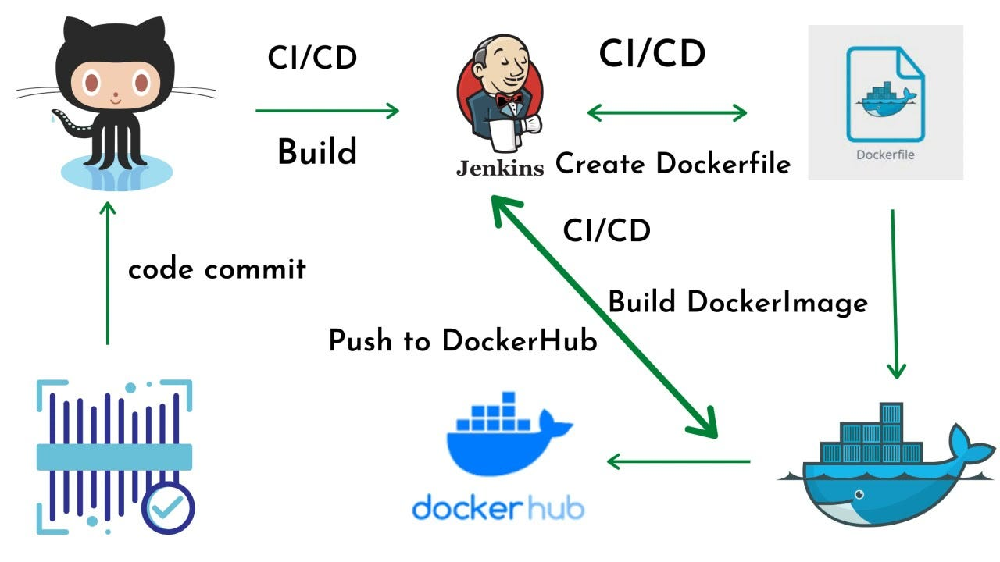

Advantages and Disadvantages
As is the case with most software, there are pros and cons to Jenkins. One of the advantages of Jenkins is that it can be extended using plugins. This makes Jenkins adaptable to changes in IT environments. Plugins also contribute to the flexibility of Jenkins, as does the rich scripting and declarative languages that allow for highly custom pipelines. Since Jenkins is highly unopinionated, it fits well into most environments, including complex hybrid and multi-cloud systems.
Jenkins has been around much longer than other solutions in this space. This, plus its flexibility, has led to it being widely deployed. For this reason, Jenkins is well understood, with a broad knowledge base, extensive documentation, and abundant community resources. These resources make it easier to install, manage and troubleshoot Jenkins installation.
Finally, Jenkins and its plugins are built on Java. Java is a proven enterprise development language with a broad ecosystem. This places Jenkins on a solid base that can be extended using common design patterns and frameworks.
Jenkins is, of course, not perfect. While it is easy to install (with simple to follow directions), production Jenkins can be difficult to implement. Developing production pipelines using Jenkinsfiles requires coding in either its declarative or scripting language. Complex pipelines, especially, can be difficult to code, debug and maintain.
How Jenkins work
Jenkins runs as a server on a variety of platforms including Windows, MacOS, Unix variants and especially, Linux. It requires a Java 8 VM and above and can be run on the Oracle JRE or OpenJDK. Usually, Jenkins runs as a Java servlet within a Jetty application server. It can be run on other Java application servers such as Apache Tomcat. More recently, Jenkins has been adapted to run in a Docker container. There are read-only Jenkins images available in the Docker Hub online repository.
To operate Jenkins, pipelines are created. A pipeline is a series of steps the Jenkins server will take to perform the required tasks of the CI/CD process. These are stored in a plain text Jenkinsfile. The Jenkinsfile uses a curly bracket syntax that looks similar to JSON. Steps in the pipeline are declared as commands with parameters and encapsulated in curly brackets. The Jenkins server then reads the Jenkinsfile and executes its commands, pushing the code down the pipeline from committed source code to production runtime. A Jenkinsfile can be created through a GUI or by writing code directly.

For more info